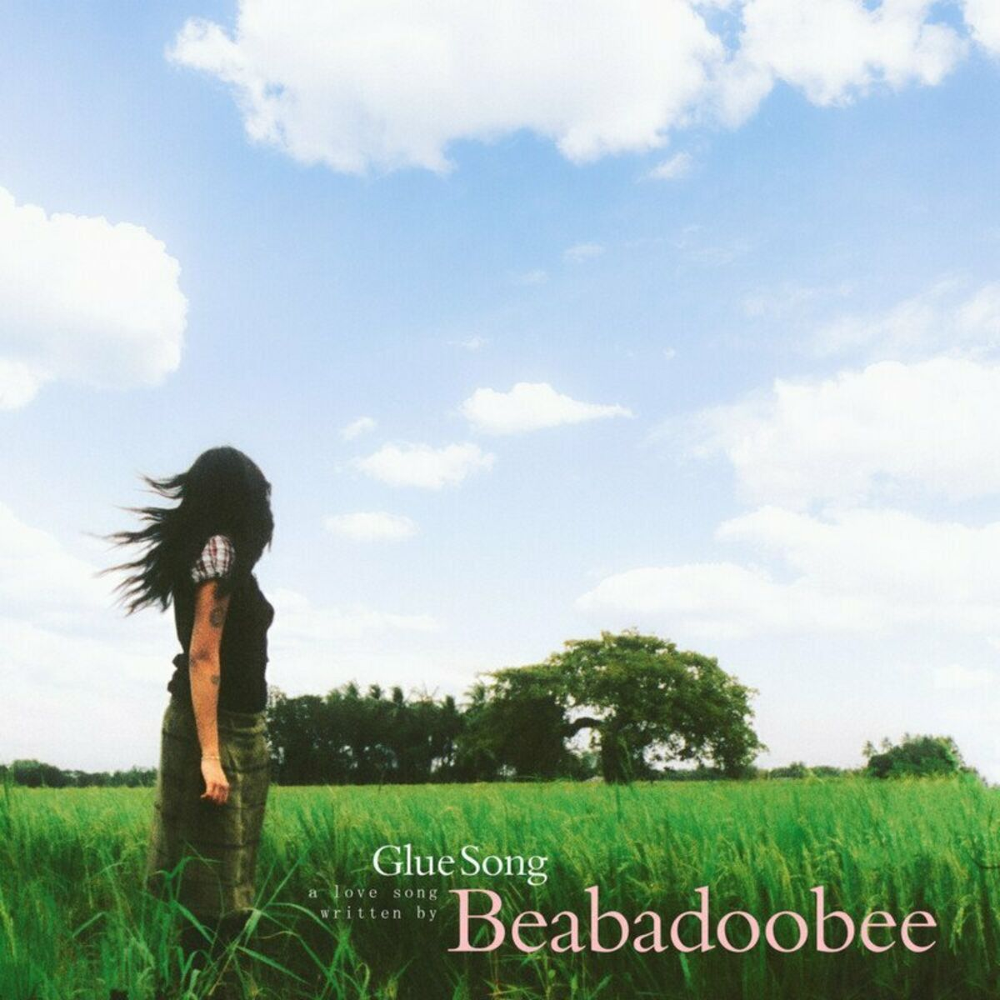
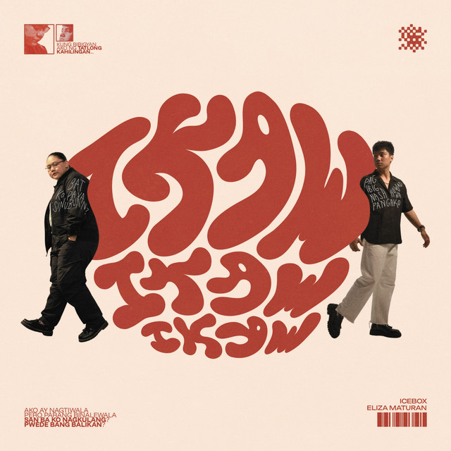

🩷 Welcome. Enter the special password to unlock your birthday surprise.
hint: bidet q (bella)
🩷
Hi!! I made this whole website just for you so I could do something truly special for your birthday
kahit malayo tayo sa isa’t isa. It may have took me a lot of time to do this, pero I believe na this
would be worth it. Tani magustuhan mooooo! 💖
15 Poems 📖
15 Letters 💌
Songs That Remind Us of You 🎶
Video Greetings 🎥
Ending Letter ✨
← back to home
Songs That Remind Us of You 🎶

Glue Song – beabadoobee
Although this song is like a love song, maremember taka gyapom here kay ang lyrics feels like
they were written about the way I feel about our friendship. Lines like "I've never known someone like you" and "I've been stuck by glue,
right onto you" perfectly describe how important u are to me. It also talks abt being tangled, stuck, and connected in a way that doesn't fade,
and that's exactly how I feel about you -- I carry our memories, online laughter, and even the little moments wherever I go. Every time I hear it,
I think of you, and it reminds me that some bond, like ours, is impossible to forget.
- Bella
Pink Skies - LANY
lany songs, specifically “pink skies”, reminds me of her ever since she mentioned it was her favorite. Every time I hear any LANY song, it brings her to mind.
- Rhyll

Ikaw, Ikaw, Ikaw - Icebox
Everytime I hear “Ikaw, Ikaw, Ikaw”, maui always comes into my mind. It reminds me of her and all the shared memories we have.
← back to home
15 Letters for Laurice 💌
💌 Tap to open
— Bella
Happy Birthday, Bff'ed! I dont even know where to start bcs wrds cant really capture how grateful I am to have u in my life.
You've been there for me through everything -- especially the hardest moments, when I honestly felt like I had reached the rock bottom.
And yet, you never judged me, never did anything wrong to me, and somehow just stayed by my side, reminding me that I'm not alone.
I feel so comfortable w u, more than anyone else, to the point na kaya ko iahambal simo tanan.
Ang I'd never even feel like ginajudge moko. You make it easy for me to open up saimo, to just be myself, to talk or
tell u things without even feeling or thinking like i-judge moko, and that's a gift.
Funny how life works, right? Kay we started off as strangers, then became mutual friends on socials, and now we're bestfriends
who can't even survive a day wo messaging. Even though we're not in contact with the person who originally brought us together,
you've stayed, and that says more than I can ever put into words. You're truly my constant, my day 1, and I can't imagine life without u.
Thank you for every laugh, every vent session, every random chat, and every moment you've been there without fail.
I hope your birthday is filled with the same love, warmth, and happiness you give to everyone around u -- especially me.
You really deserve the world, and I'll always be here to remind u how amazing u are.
Thank you for being there for me always and remember na I'll be there for u too whenever u need me.
Happy Birthday liwat, Bibehh HSKJQWHKWHWSQJHSJWEKL I love youuuu!! :)
💌 Tap to open
— Rhyll
where should i start? from..
“hi, laurice”
or
“happy birthday, laurice”
or
“thank you, laurice”
guess i’ll just start saying..
hi laurice, happy happy birthday. thank you for everything you’ve done, mau.
i really appreciate you—your efforts, care, love, and understanding.
who would have even thought that we will end up being best buddies, right?
hahah being classmates for 3yrs really made our bond grow longer and stronger.
i love you, mau. i love you and i am very proud of you.
not just on your academic achievements, but also for being strong and bold.
i hope you’ll get okay on the things you are not.. everything will be okay.. on time.
💌 Tap to open
— Clai
hello, hi, ha? hhahwhwhahwhahhwheha huh? hahahahhaa happy birthdaaaay to you! happy birthday, mama rice!
wala ko may madumduman kung pano ta nag kilalahanay, wala man ko nag expect nga maging close ta..
super happy gid ko kay nag kilalahanay ta, super happy ko kay nakilala ta kamo. DAW MA CRY KO AH.
i lovee youu mother, dalaga na ang tomboy : ( stay who you are and tani magbag-o kana. love love tagid ka..
i know na may mga problema ka nga wala ginahambal samon, pirme kogid gina pray na e guide ka/kamo ni Lord,
pero indi ka mahuya nga ihambal samon ha? ari lang kami di, mamati ko simo, pero ma expect ka na ma cry man
ko kay gasakitan ko kung gakakita kamo na ga cry, indi kona gusto : ( proud na proud gid ko simo, ma..
maskin small or big achievement, proud na proud gid ko simo!! love love love loveee taka, love love ta kamo
ni mama ril and manang bella! HAPPY BIRTHDAY, MOTHER LAWRENCE!! I LOVEE YOUU 🥹🥹🥹
💌 Tap to open
— Macy
From : manghod mo nga gwapa 😜
Happy Birthday, dai! Stay healthy and keep safe always.
bisan daw wala adlaw nga wala ta ga inaway, palangga taka gyapon.
sorry dai kay everytime nga mag inaway ta gina sabat sabat taka HAHAHA.
Remember that nga i'm always here when you need someone to talk to.
Happy 15th Birthday, Ate! God bless you always 🫶🏻 iloveyou!!
💌 Tap to open
— Manang Kyla
Happiest birthday, Ate!
I’ve seen how much you’ve grown, and I am so incredibly proud of the person you are.
Seeing you navigate life and become who you are today has been one of my favorite things to watch.
I want you to always remember that no matter how old you get or where life takes you, I am forever
your safe space. I will always be here to listen to your rants—whether they are big or small,
silly or serious. Whatever is on your mind, you never have to keep it to yourself. My ears (and my heart) are always open for you.
You don’t ever have to face the hard days alone because I’ve always got your back.
I love you so much, and I hope this year brings you all the happiness you deserve!
Love,
Manang Kyla (◕ᴗ◕✿)
💌 Tap to open
— Reynz V
Here’s a warm and simple birthday message you can use or personalize:
Happy Birthday, Laurice! Du ka ligad lang sng gng recruit ka namon to join ANGAT para sa election,
sbng kadasig snyu mag dako🥲 Anw, grateful gd ko sng una nga isa ka sa representative ko, kay somehow
na feel ko gd nga gna saligan nyoko kay up until today, ara kmo dyapon sakon sa YES-O.🥹 mga loyals talaga yan sla.
Stay who you are nhak, sana mag bago kana. My only wish for you is to continue serving and leading
our school community. May God bless you a healthy and joyful life. Sorry nhak, nd ko fond sng lsm or whatsoever,
but I hope you'll feel my sincerity within this message. Love lots!!!
Sincerely
[ Reynz V ]
💌 Tap to open
— Binsoyy
Mabuhay! This is Philippine Airlines,✈️ wishing you a complete and wonderful happy birthday , LAURICE MAURIN BLANCE8˶• . • ⑅,,,, —
enjoy your day mau, kabalo ka nga nag no talk challenge ta for 1 mouth😭 pero nag pa thank you gid kuto kita damo gid ko na realize
that time, kag na pamati-an kuman ang imo side which is good, and remember lang nga ari lang kudi despite sang mga problem nga gina
agyan mo, wla ni eme² ha. thank you🎉man sa pag tindog bilang isang ina:>> 🥂like kung may makita ka nga sala gina correct mo gid sa
nami nga pamaagi, indi ko nani pa dugayon ah, kabalo ka man ang mga long message era ta🥹, before this message end I wanna say thank
you gid like as in, damo gid ko may na realize. baka "best president ever yarn" injoy your day and I'm wishing you a great day ahead!!
see you next year,; ^ - ^
—BINSOYY🙈💝
💌 Tap to open
— Irha
Happy birthday, mau thank you for being a Good best friend sakon thankyou sa pag comfort kag pag listen sa mga probs ko nga gina rants simo, wish you all more birthday to come, mau. We love you so much, maui😚😚🩷🎊🎊🫶
💌 Tap to open
— Ashi
hello, ms. pres ko since 2023 ! it’s been a while since we last catch up with each other, noh? i actually don’t know what to say kay du indi nata mashado close but, i’m rooting for your success in life ! 💞 you deserve every good thing in this world because of how kind, beautiful, smart, & generous you are 🥰 always remember that you’re worthy, appreciated, seen, & loved by a lot, especially me !! 💞
i love you, God bless, ms. pres ko !! 😘
💌 Tap to open
— Celo
Dear Mowie Wowie
Happy birthday mother!!! Thank you sa tanan nga nahimo mo para sakon kag sa iban pwede bang isang ahh daddy Muna, kag thank you Kay Ikaw man ang nagingsuga ko sa kabuhi kag Isa! palangga ka namon (ano babad na babad Nako dito ho)
Nag mamahal Khianna with a K!🥰🥰🥰🥰
💌 Tap to open
— Crystal Mae
Happy Birthday, bebe laurice! I don't know how to start this message (lemme just start with a quick throwback hahaha) i still remember sang time nga awarding na sa district spc, tuparay pa ta nila ryan, vincent, kag lablab joking about magpakalbo ko kag si ryan if ever magdaog kmi sa journalism. we were so happy that time and that was such a fun moment! those little memories always make me smile, and it’s crazy how those fun times stick with us. even though we’re not super close, I’ve always thought of you like a younger sister, and I hope your birthday is as awesome as those laughs we shared.
wishing you a year full of good vibes, big dreams, and all the happiness you deserve. you’re amazing, genuine, friendly and approachable person so I hope today and the year ahead bring you nothing but good things. as a manang manang, you can always ask me or open up to me about something (js approach me, buot man ko ah) Happy birthday ulit, laurice! Celebrate big and have the best birthday ever! 💖
💌 Tap to open
— Alen
DM sakon lab kay naka voice message to HAHAHAHAH
💌 Tap to open
— Fretz
Happy Happy Happy birthday mui mui, leader sang tomboyhood hehehehe🥺🥺😍😍, we love so much stay what u are hahaha sana mag bago kana, amo lang na hsahshahahahshasahaha, loef u tomboy 🥺🥺🥺🥺
💌 Tap to open
— Manang Chenie
Hi Ate! I Can't believe you're 15 now. Daw sang san o lang, gagmay pa kamo, subong taas na kmo sakon 🤭 Continue to study hard and always make your Mama, Papa, Toto, Manongs, and everyone around youu proud. I know you still have a long road ahead, but I always believe that you can do it. Manang Cheniee will always be here cheering and praying for youuu. Lawig na nga way ta ka inupdanay, but you always hold have a special place in my heart, Ate. Imissyouuuuu and Loveyouuu so muchhhh😘 Dasun lang gift pag may work na si Manang hehehe. Mwaaaa 😚
💌 Tap to open
— yk who
lantawon ta karon kung ma lsm sa AHHAAHHAHAAH
← back to home
Video Greetings 🎥
Hi, here's a compiled video greeting from all your friends!! loveu, tani magustuhan mo (edit ni rhyll kag renz HWJSWHAGHASGHWHA)
← back to home
Poems I Made That's Just 4 U📖
these poems are made in just a week so pabay-e lang plz if may typo whahgshwga
Lifeline
Acrostic - the first letters spell out a message.
You were once just a name on my screen, a quiet hello.
Online waves turned into late-night replies.
Us, mutuals first—nothing more than reactions and laughs.
Somehow, we stayed.
A day came when not talking felt impossible.
Voice notes, screenshots, random stories from my life.
Every ordinary thing felt lighter when shared with you.
Distance shrank each time you said, “may chika ko”
Moments piled up—messy, funny, honest.
Ended up saving me, without ever meaning to.
Ang Imong Ngalan
Acrostic - the first letters spell out a message.
Labay sa hunahuna ko ang imo ngalan,
Auna nga pahimakas,
Una nga pahimunong.
Rason sang pahimunong.
Internet ukon atubangay,
Calma gid ang balatyagon.
Espesyal ka.
Bisan diin ko mabatian,
Liwat nga nagahamtang ang dughan.
Ara lang ang katahum.
Nami nga mga pulong.
Comportable gid.
Engkanto sang kabuhi.
Ulihi nga Higugma
Haiku - a poetic form consisting of three lines with a
5-7-5 syllable pattern, often reflecting on fleeting
beauty, moments of clarity, or nature.
Sa tunga sang kasubo
Tawa mo ang akon silaw
Abyan nga matuod
Random, Pero Ikaw
Ode - a poetic form that formally expresses
admiration or praise, often written to honor a
concept, object, or person with heightened emotion.
Ikaw ‘yung taong biglang dumating, walang paalam, walang plano, pero sobrang sakto.
From “kumusta ka?” to “nandito pa rin ako,” from memes to breakdowns, from tahimik na araw hanggang sa gabi na puro tanong.
Hindi mo ako tinanong kung bakit magulo ako, hindi mo rin sinabing ayusin ko muna sarili ko. You just stayed. You listened. You made space.
At sa mundo na ang daming opinyon, ikaw ‘yung pahinga. Hindi kailangan magpanggap, hindi kailangan maging okay. Sapat na ‘yung totoo.
Ikaw ang Pahinga
Free verse - a poetic form that does not follow regular
meter, rhyme, or structure, allowing emotions and
ideas to flow more naturally.
Ikaw ang kaibigan na hindi kailangang paghandaan, hindi kailangang ipaliwanag.
Sa’yo, walanɡ tanong kung bakit ganito ako, walanɡ bigat ang katahimikan.
Pwede akong dumating na magulo, puwedeng umiiyak, puwedeng walang direksyon.
At hindi mo ako aayusin. Tatabihan mo lang.
Dito ko natutunan na ang tiwala pala hindi hinihingi— ibinibigay.
Kung may isang taong kayang saluhin ang lahat ng bersyon ko, ikaw ‘yon.
Cahoy nga Nagbuhi
Shape - a poetic form in which the lines and words
form a visual image on the page, with the shape itself
reflecting the theme.
dahon
sang paglaum
nga ginpabuhi mo
sang tion nga uga
na guid ako
sa kasakit kag
kahaw-ang
nagtindog
ka
bilang ulan
kag adlaw nga
nagpainit sang
akon mga sanga
kag gamot
hasta
nga
nag
bun
ga
a
ko
Even If
Sonnet - a poetic form, highly structured in 14 lines,
traditionally written in iambic pentameter, with
specific rhyme schemes, often exploring themes of
love, mortality, or time.
You found me where the petals hid their pain,
A rose admired, yet bleeding underneath.
I smiled in bloom, but thorns refused to wane,
Each quiet hurt embedded in my teeth.
You did not pluck the flower for display,
Nor asked me why the stem was scarred and torn.
You held the soil, said, “Stay another day",
And let me rest where hope could still be born.
For what is love if not this gentle art:
To see the thorn, yet never turn away?
You kept me safe inside your vaulted heart,
And taught my wounds they, too, could someday stay.
Bisan Apat na Tabi
Tanaga - a poetic form consisting of four lines with a
7-7-7-7 syllable pattern, usually conveying deep
meaning, metaphor, or moral reflection
Sa dilim may ilaw,
Sa bagsak may salo,
Kaibigang totoo,
Ikaw ang panalo.
Lapit pero Layo
Contrapuntal - a poetic form in which two separate
poems are written side by side, often in columns,
which can be read individually or together, creating
multiple layers of meaning.
Layo ka sa akon
Wala ta pareho lugar
May oras nga hilum
Indi ta mag-upod adlaw-adlaw
Daw ginbutang ko ang kabuhi sa pahibalo
Ang kalayo naga-init sang kasakit
Ginahunahuna ko nga madula ka
Ara ka permi
Wala ka naghalin
May oras nga pamati
Pero gin-updan mo ang akon hunahuna
Ginpasan mo ini nga wala sing pamangkot
Ang presensya mo naga-ayo sini
Ginpamatud-an mo nga indi
A Vaulted Heart
Contrapuntal - a poetic form in which two separate
poems are written side by side, often in columns,
which can be read individually or together, creating
multiple layers of meaning.
I lock my pain away
I fear the quiet nights
I doubt my own worth
I expect to be judged
I survive by closing off
You keep it safe
You stay present
You speak it back to me
You listen first
You love with open hands
Nagakupkop nga Hugis
Shape - a poetic form in which the lines and words
form a visual image on the page, with the shape itself
reflecting the theme.
mahal kita sobra
kahit tahimik kahit malayo
kahit ganito tibok ng puso
lihim na salita na hindi ko
masabi sa iba kundi sa’yo
dito ko inilagak
ang takot at dasal
tahimik
pero
buo
Constant Between What Was
Free verse - a poetic form that does not follow regular
meter, rhyme, or structure, allowing emotions and
ideas to flow more naturally.
You were never meant to choose sides, and yet you chose kindness.
When everything broke, when names became memories and love turned into something fragile, you stayed steady.
You didn’t ask me to explain what already hurt too much to say. You didn’t remind me of what I lost.
You reminded me that I was still here.
Between what was and what could have destroyed me, there you were— quiet, constant, unmoving.
Ending That Stayed
Tanka - short poem with a 5-7-5-7-7 syllable structure
Nadula ang tanan
Pero ara ka gihapon
Wala sing pamangkot
Nagpabilin sa akon kilid
Hasta nga nakaangkon kusog
In Quiet, Constant
Ode - a poetic form that formally expresses
admiration or praise, often written to honor a
concept, object, or person with heightened emotion.
Not loud, not dramatic, you arrived like gravity— always there, always pulling me back to ground.
You didn’t fill the space with advice or answers. You filled it with presence.
In days when everything shifted, you stayed the same. In nights when I felt unrecognizable, you spoke to me like I still was.
You are not the moment. You are what remains after.
Love, You
Free verse - a poetic form that does not follow regular
meter, rhyme, or structure, allowing emotions and
ideas to flow more naturally.
We don’t talk about her anymore, and that’s okay. What matters is—you stayed.
From love to loss, from silence to healing, you walked with me without looking back.
That is friendship. That is you.
Afterword ✨
These poems were never meant to be perfect.
They were meant to be honest.
And they were written only for you.
Fifteen ways of celebrating you, growing with you, and keeping you near across every distance and moment.
May mga tula na malumanay ang tinig,
may mga tula naman na masigaw ang damdamin;
apán tanan nagahalin gihapon sa pinakamalalom ko nga tagipusuon.
p.s. check mo ang first letter sang each title : )
← back to home
💌 Final Letter
— Clyza
hi. if you reached this part, it means you made it through all the letters—every word,
every memory, every piece of love people poured into you.
i hope you felt how deeply loved you are, because this is only a small reflection
of how much you truly mean to so many of us.
this website, these letters, and every message here exist for one reason: you.
for the way you love, lead, care, and stay—especially when life isn’t easy.
on days when you feel tired, unseen, or unsure of yourself,
i hope you remember this page and know that you are never alone.
when you’re sad, happy, or whatever you’re feeling,
you’re always welcome to come back here para maremember mo
nga damo gid ang ga love sa imo.
no matter how much life changes, no matter where we all end up,
always remember this:
you are loved more than you think,
appreciated more than you realize,
and cherished in ways words can’t fully explain.
amo ni gali ang ginahambal ko sa imo nga gina-code ko hehe 😭
love u.
happy birthday, laurice!!
this isn’t the end—this is just another beautiful chapter.